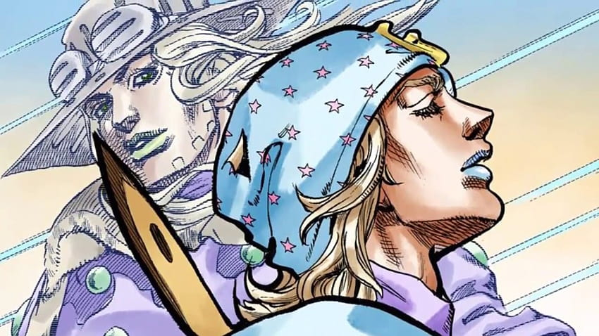

JOHNNY JOESTAR
Protagonista de SBR, un ex-jinete de carreras y parapléjico que busca redimirse y recuperar la movilidad de sus piernas...
seguir leyendoGYRO ZEPEPLI
Un talentoso jinete y maestro de la técnica de la Rotación, participa en la carrera para salvar a un niño condenado a muerte...
seguir leyendo